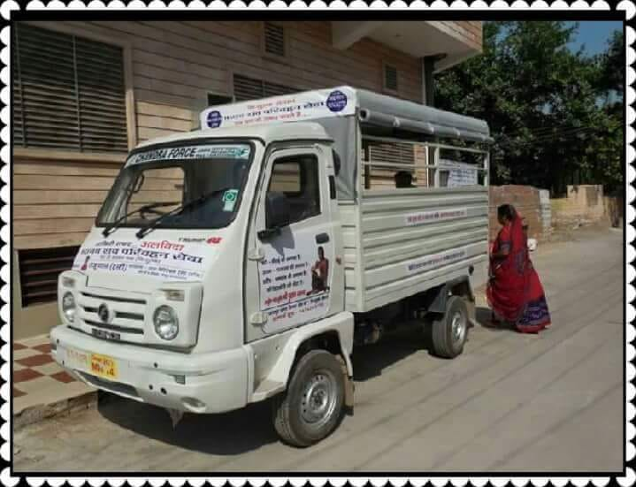
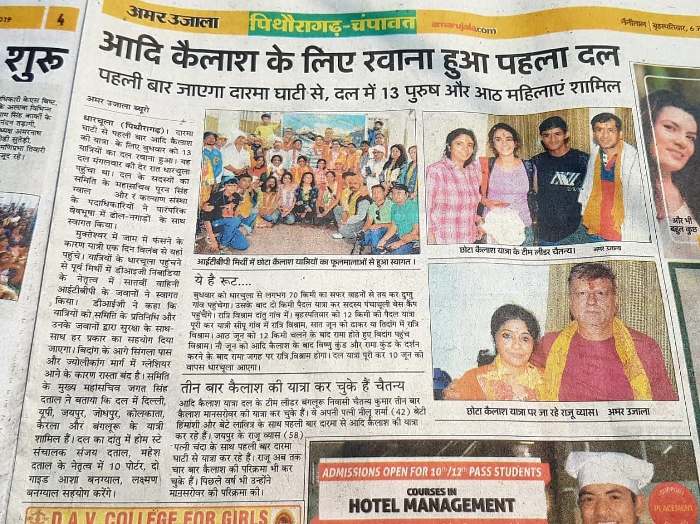
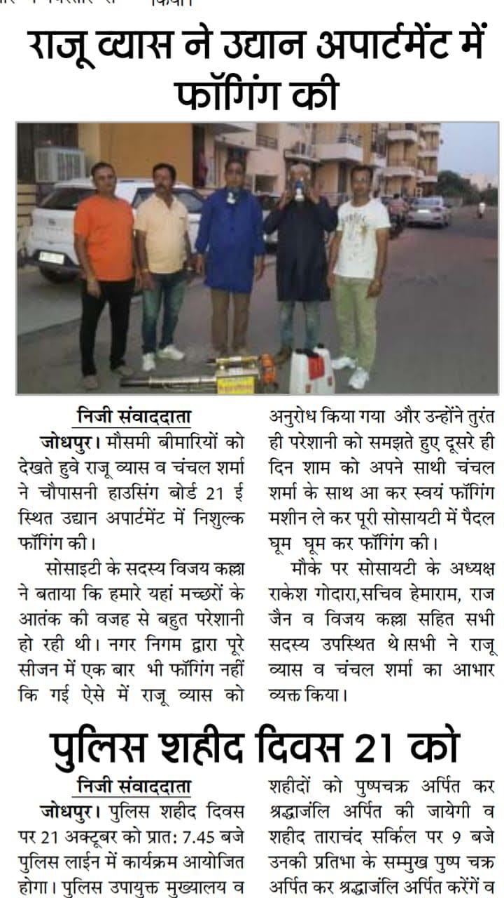
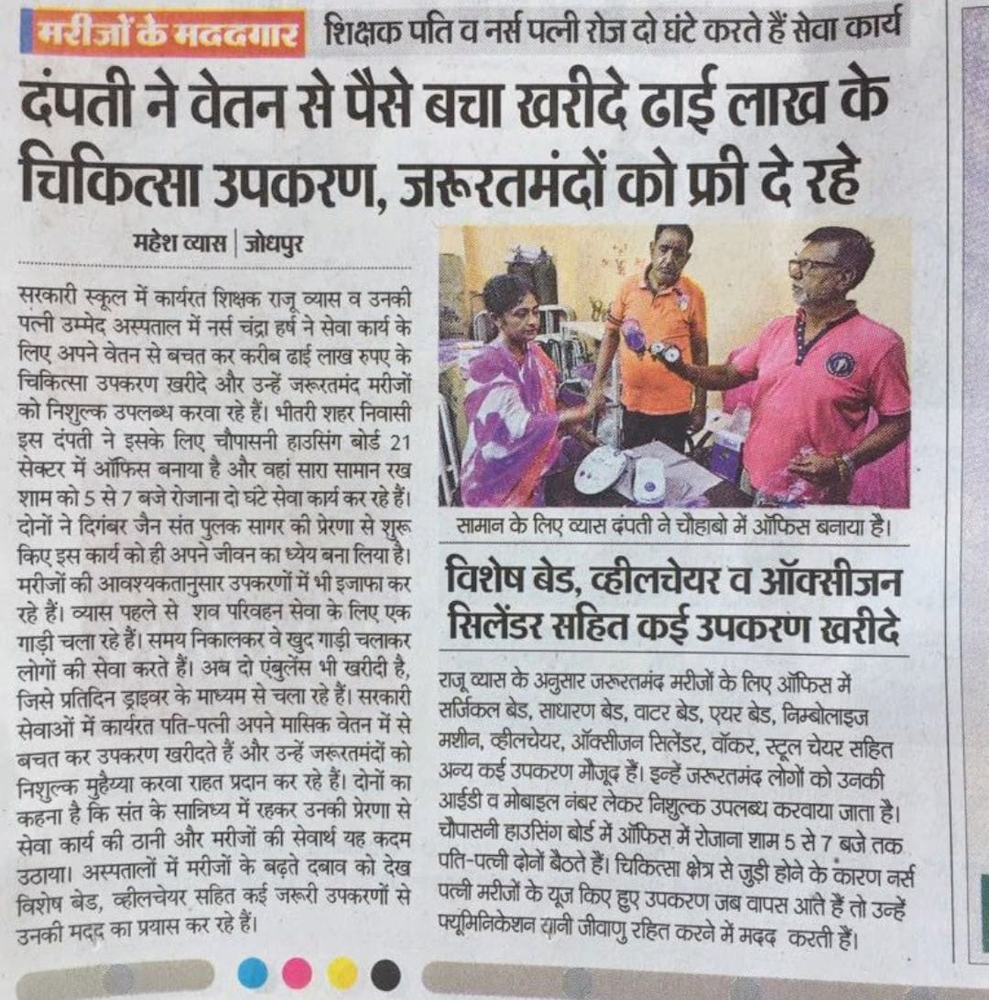
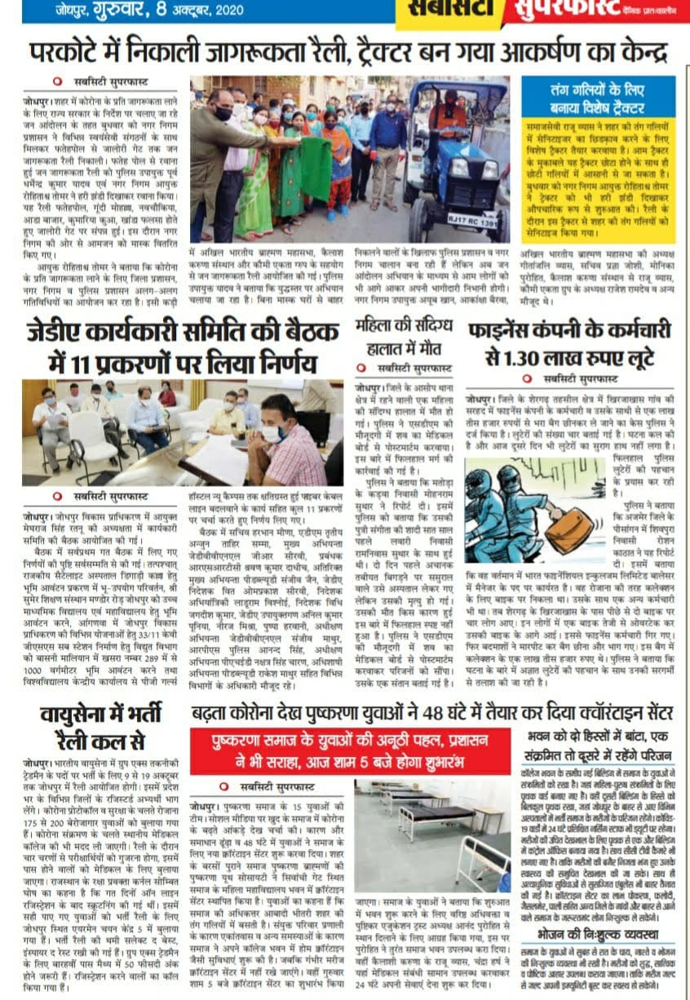
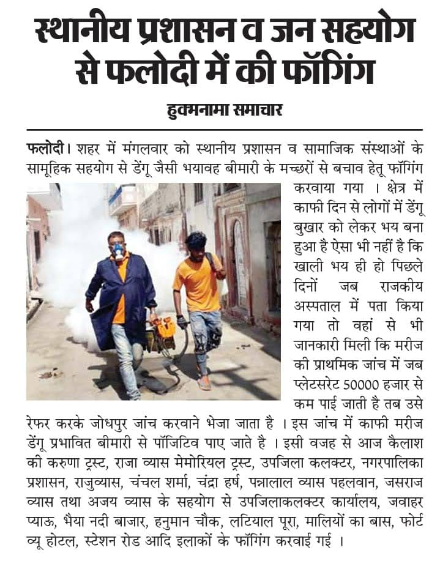

VIDEO 01

OUR WORK. OUR JOURNEY. OUR IMPACT. हमारे कार्य। हमारी यात्रा। हमारा प्रभाव।
Every act of care
leaves a lasting mark.
सेवा का हर प्रयास
एक अमिट छाप छोड़ता है।
A visual journey through the people, initiatives, milestones and moments that define Kailash ki Karuna. उन लोगों, पहलों, उपलब्धियों और यादगार पलों की एक झलक, जो कैलाश की करुणा की पहचान हैं।
EXPLORE OUR JOURNEY हमारी यात्रा देखें
01
06
01 / THE JOURNEY
MORE THAN MILESTONES उपलब्धियों से बढ़कर
The real achievement
is making a difference.
असली उपलब्धि है
किसी के जीवन में बदलाव लाना।
Every photograph represents a moment. Every story represents a person. And every initiative reflects our belief that compassion becomes meaningful when it reaches someone in need. हर तस्वीर एक पल को दर्शाती है। हर कहानी किसी व्यक्ति से जुड़ी है। हमारी हर पहल इस विश्वास को दर्शाती है कि करुणा तभी सार्थक होती है जब वह जरूरतमंद तक पहुँचती है।
“
Shiv hi Seva Hai शिव ही सेवा है
50+
Moments captured
यादगार तस्वीरें
20+
Media features
समाचार कवरेज
03
Video stories
वीडियो कहानियाँ
 01
01
02 / CARE AT HOME
SUPPORT WHEN IT MATTERS जरूरत के समय सहयोग
Helping families access essential medical equipment. परिवारों तक जरूरी चिकित्सा उपकरण पहुँचाने में सहयोग।
Through our Nishulk Chikitsa Upkaran Bank, we help families access essential home-care equipment such as hospital beds, oxygen equipment, wheelchairs, walkers and other care-support devices. नि:शुल्क चिकित्सा उपकरण बैंक के माध्यम से हम परिवारों को अस्पताल बेड, ऑक्सीजन उपकरण, व्हीलचेयर, वॉकर और अन्य जरूरी घरेलू चिकित्सा उपकरण उपलब्ध कराने में सहयोग करते हैं।
Explore our equipment support उपकरण सहायता के बारे में जानें 02
02
03 / STANDING TOGETHER
A TIME OF NEED संकट के समय साथ
Supporting the community during COVID-19. कोविड-19 के कठिन समय में समुदाय का साथ।
During the pandemic, a local isolation and patient-support facility was arranged at Surajdevi Roopa Devi Pushtikar Private School, with food and basic care support for people who needed assistance. महामारी के दौरान सूरजदेवी रूपा देवी पुष्टिकर प्राइवेट स्कूल में स्थानीय आइसोलेशन और मरीज सहायता केंद्र की व्यवस्था की गई, जहाँ जरूरतमंदों को भोजन और बुनियादी देखभाल में सहयोग दिया गया।

03
04 / COMMUNITY CARE
Social Service सामाजिक सेवा
Serving the community beyond healthcare. स्वास्थ्य सेवा से आगे बढ़कर समाज की सेवा।
Our community initiatives have included dengue fogging activities and free drinking-water booths (Jalgrah), Ambulance services, providing a hearse / dead body transport vehicle (Shav Vahan) for final funeral rites reflecting our commitment to practical support for people around us. हमारी सामुदायिक पहलों में डेंगू रोधी छिड़काव गतिविधियाँ और निशुल्क पेयजल बूथ (जलग्रह), एम्बुलेंस सेवाएँ, अंतिम संस्कार के लिए शव वाहन/शव परिवहन वाहन उपलब्ध कराना शामिल हैं, जो हमारे आस-पास के लोगों के लिए व्यावहारिक सहायता के प्रति हमारी प्रतिबद्धता को दर्शाते हैं।

05 / RECOGNITION
AN HONOUR ALONG THE WAY यात्रा का एक सम्मान
National Maru Ratna Award राष्ट्रीय मरु रत्न सम्मान
Raju Vyas was honoured with the National Maru Ratna Award. A moment of recognition in a journey shaped by service and commitment. राजू व्यास को राष्ट्रीय मरु रत्न सम्मान से सम्मानित किया गया। सेवा और समर्पण से जुड़ी यात्रा का यह एक महत्वपूर्ण सम्मान है।
KAILASH KI KARUNA
06 / IN THE MEDIA
OUR WORK, REPORTED समाचारों में हमारे कार्य
In the news. समाचारों में।
A collection of newspaper articles and media coverage documenting different moments of our journey. हमारी यात्रा के विभिन्न पड़ावों को दर्शाते समाचार पत्रों और मीडिया कवरेज का संग्रह।

↗
FEATURED COVERAGE
प्रमुख समाचार
Stories of service deserve to be shared. सेवा की कहानियाँ साझा की जानी चाहिए।
Open the original newspaper image to read the complete article. पूरा समाचार पढ़ने के लिए मूल समाचार पत्र की तस्वीर खोलें।

Read coverage ↗ समाचार देखें ↗
Read coverage ↗ समाचार देखें ↗
Read coverage ↗ समाचार देखें ↗
Read coverage ↗ समाचार देखें ↗Select any clipping to view it at full size. किसी भी समाचार की तस्वीर को बड़े आकार में देखने के लिए चुनें।
07 / THROUGH THE LENS
PEOPLE. PLACES. PURPOSE. लोग। स्थान। उद्देश्य।
Moments that stay with us. कुछ पल जो हमेशा याद रहते हैं।
A visual collection of the people and experiences that make this journey meaningful. उन लोगों और अनुभवों का चित्र संग्रह, जो इस यात्रा को सार्थक बनाते हैं।
THE JOURNEY CONTINUES यात्रा जारी है
Recognition is meaningful.
Service is the purpose.
सम्मान महत्वपूर्ण है।
सेवा ही हमारा उद्देश्य है।
Discover the people and purpose behind Kailash ki Karuna. कैलाश की करुणा के पीछे के लोगों और उद्देश्य को जानें।
Discover our story हमारी कहानी जानें